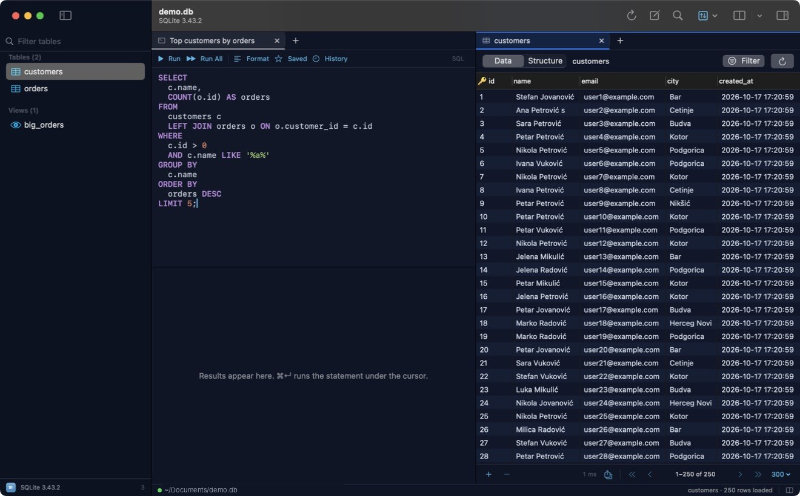

Themes
Pick a look for the whole app: the query editor, the data grid, the sidebar and the tab and status bars change together.

Choose a theme
- Open the theme list
Choose Tabulo ▸ Settings… (⌘,) and click Appearance. Each theme shows a small preview with a sidebar, a line of SQL and a few grid rows.
- Click a theme
Every open window changes at once. There is nothing to save, and Tabulo keeps the theme the next time you open it.
- Or switch from the menu
View ▸ Theme lists the same themes, with a check mark next to the one in use.

The themes
| Theme | Mode | Look |
|---|---|---|
| System | Light or dark, like macOS | The standard Mac look. Follows System Settings ▸ Appearance and your accent colour. This is the default. |
| Paper | Light | Warm off-white with ink-like colours. |
| Solarized Light | Light | The low-contrast cream Solarized palette. |
| Graphite | Dark | Neutral charcoal with bright syntax colours. |
| Midnight | Dark | Deep navy with soft pastel highlights. |
| Nord | Dark | The blue-grey Nord palette. |
| Dracula | Dark | Purple-tinted dark with vivid syntax colours. |
A light or dark theme sets Tabulo's mode on its own, whatever macOS uses. Pick System to follow macOS again.
What a theme changes
- Query editor: background, text, keyword, string, number and comment colours, the cursor and selected text.
- Data grid: rows and alternate rows, the selected rows,
NULLvalues and grid lines. Query results use the same grid. - Window: the sidebar, the tab bar, the status bar and the welcome window.
- Accent colour: buttons, switches and the line under the active tab.
Colours that never changeThe environment strip (production red, staging orange and so on) and the yellow, green and red highlights for edits you haven't committed look the same in every theme, so they keep their meaning. See Safe mode & environments and Edit rows.
Every theme is checked for readable contrast: normal text against its background is at least 4.5 to 1, and syntax colours and NULL at least 3 to 1.